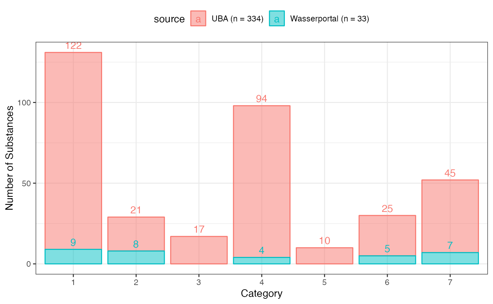
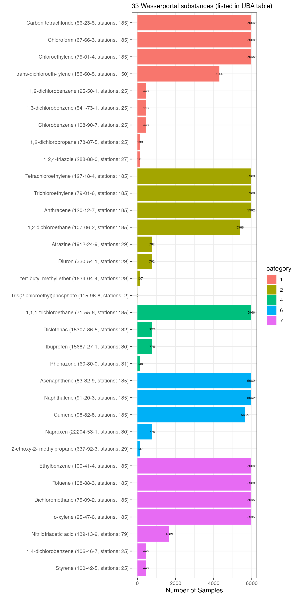
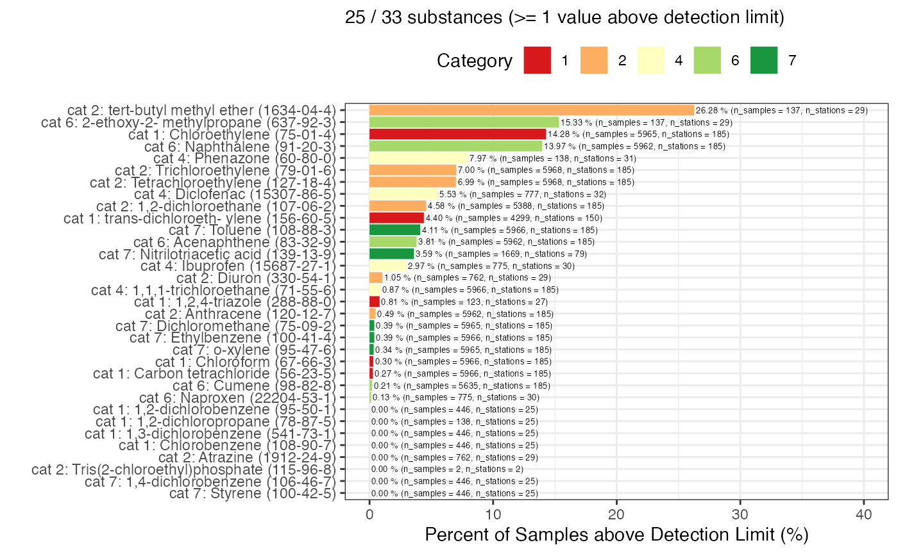
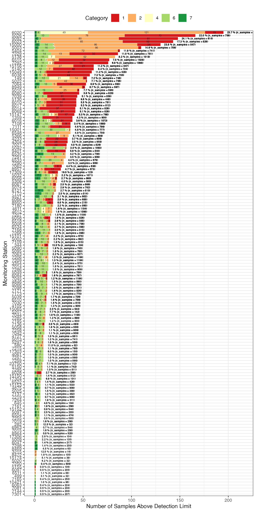
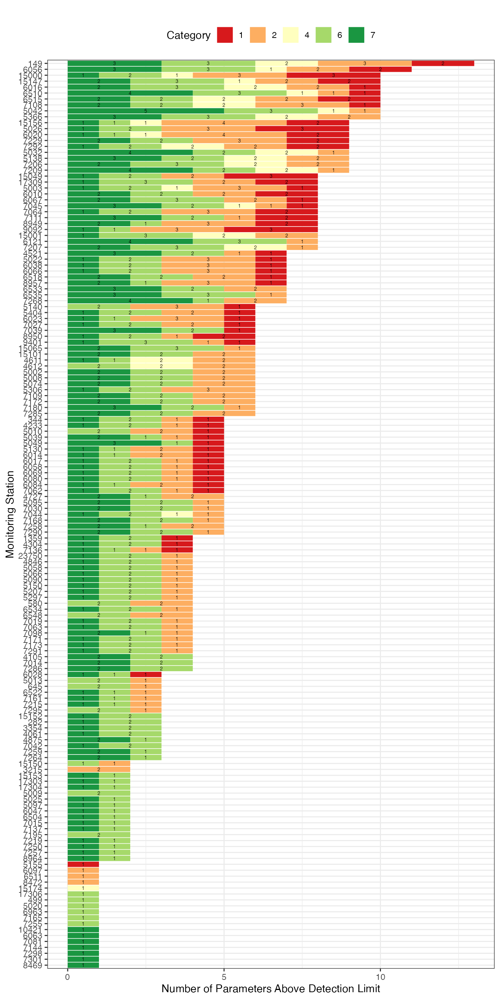
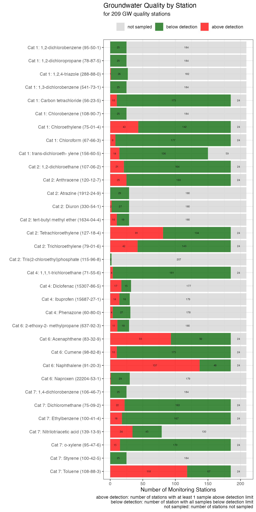
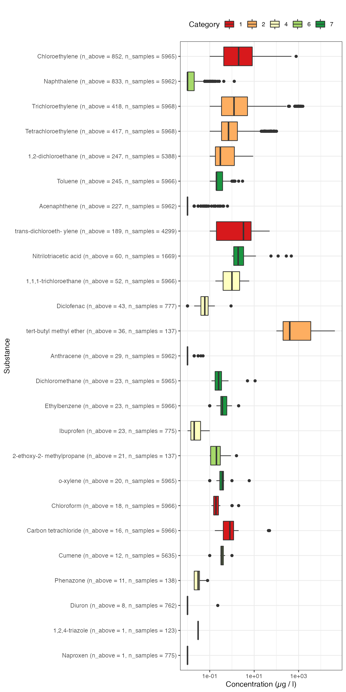

PROMISCES: Reach (UBA)
Michael Rustler
2022-07-09 05:07:47
Source:vignettes/promisces_reach-uba.Rmd
promisces_reach-uba.RmdInstall R Package
# Enable this universe
options(repos = c(
kwbr = 'https://kwb-r.r-universe.dev',
CRAN = 'https://cloud.r-project.org'))
# Install R package
install.packages('wasserportal')Get GW Quality from Wasserportal
# Load R package
library(wasserportal)
categories <- wasserportal::readPackageFile(file = "categories.csv")
cas_reach <- wasserportal::readPackageFile(file = "cas_reach.csv") %>%
dplyr::left_join(categories)
#> Joining, by = "category"
cas_wasserportal <- wasserportal::readPackageFile(file = "cas_wasserportal.csv",
encoding = "UTF-8") %>%
dplyr::inner_join(cas_reach, by = "cas_number")
### Remove duplicated Wasserportal substances (same CAS number but different, names!)
cas_wasserportal_clean <- wasserportal::readPackageFile(file = "cas_wasserportal.csv") %>%
dplyr::count(cas_number) %>%
dplyr::select(-n) %>%
dplyr::filter(!is.na(cas_number)) %>%
dplyr::inner_join(cas_reach, by = "cas_number")
### For details see:
### https://kwb-r.github.io/wasserportal/articles/groundwater.html
### JSON files (see below) are build every day automatically at 5a.m. with
### continious integration, for build status, see here:
### https://github.com/KWB-R/wasserportal/actions/workflows/pkgdown.yaml
### GW quality (all available parameters!)
gwq_master <- jsonlite::fromJSON("https://kwb-r.github.io/wasserportal/stations_gwq_master.json")
gwq_data <- jsonlite::fromJSON("https://kwb-r.github.io/wasserportal/stations_gwq_data.json") %>%
#dplyr::filter(Parameter %in% cas_wasserportal$Parameter) %>%
dplyr::inner_join(cas_wasserportal, by = "Parameter") %>%
dplyr::mutate(Messstellennummer = as.character(Messstellennummer),
## CensorCode: either "below" (less than) for concentration below detection limit
## (value is detection limit) or "nc" (not censored) for concentration above
## detection limit
CensorCode = dplyr::case_when(Messwert <= 0 ~ "lt",
TRUE ~ "nc"),
Messwert = dplyr::case_when(Messwert < 0 ~ abs(Messwert),
### Only two decimal numbers are exported by Wasserportal, but some sustances
### have lower detection limit, e.g. 0.002 which results in -0.00 export, thus
### the dummy detection limit 0.00999 was introduced (until fixed by Senate:
### Christoph will sent a email to Matthias Schröder)
Messwert == 0 ~ 0.009999,
TRUE ~ Messwert)) %>%
dplyr::left_join(gwq_master, by = c("Messstellennummer" = "Nummer"))
gwq_subs <- gwq_data %>%
dplyr::count(.data$cas_number, .data$CensorCode) %>%
tidyr::pivot_wider(names_from = CensorCode, values_from = n) %>%
dplyr::mutate(lt = ifelse(is.na(lt), 0, lt),
nc = ifelse(is.na(nc), 0, nc),
n_total = lt + nc,
percent_nc = 100*nc/n_total) %>%
dplyr::rename(n_lt = lt,
n_nc = nc) %>%
dplyr::left_join(cas_reach[, c("category", "category_name", "name", "cas_number")]) %>%
dplyr::rename(name_uba = name) %>%
dplyr::select(category, category_name, name_uba, cas_number,n_lt, n_nc, n_total, percent_nc)
#> Joining, by = "cas_number"
readr::write_csv(gwq_subs, "gwq_subs.csv")
DT::datatable(gwq_subs, filter = "top", rownames = FALSE)Reach Substances in Wasserportal
Total
g <- cas_reach %>%
dplyr::mutate(source = sprintf("UBA (n = %d)", nrow(cas_reach))) %>%
dplyr::bind_rows(cas_wasserportal_clean %>%
dplyr::mutate(source = sprintf("Wasserportal (n = %d)",
nrow(cas_wasserportal_clean)))) %>%
ggplot2::ggplot(mapping = ggplot2::aes(x = forcats::as_factor(.data$category),
fill = .data$source,
col = .data$source)) +
ggplot2::geom_histogram(stat = "count", alpha = 0.5) +
ggplot2::geom_text(stat="count", ggplot2::aes(label=..count..), vjust=-0.5, position="stack") +
ggplot2::scale_x_discrete() +
ggplot2::theme_bw() +
ggplot2::theme(legend.position="top") +
ggplot2::labs(y = "Number of Substances", x = "Category")
#> Warning: Ignoring unknown parameters: binwidth, bins, pad
g
ggplot2::ggsave(filename = "wasserportal_number-of-reach-substances.jpeg",
plot = g,
width = 14,
height = 11,
units = "cm")
#plotly::ggplotly(g)
By Station
by_stations <- samples_by_para_and_station_n %>%
dplyr::select(.data$name_uba, .data$n_stations_sampled)
#> Adding missing grouping variables: `category`, `category_name`
wasserportal_substances <- samples_by_para_and_station_n %>%
dplyr::arrange(.data$category,
dplyr::desc(.data$n_total),
dplyr::desc(.data$n_stations_sampled),
.data$name_uba) %>%
dplyr::select(.data$category,
.data$name_uba,
.data$cas_number,
.data$n_total,
.data$n_stations_sampled)
#> Adding missing grouping variables: `category_name`
DT::datatable(wasserportal_substances, filter = "top", rownames = FALSE)
wasserportal_substances_plot <- wasserportal_substances %>%
dplyr::mutate(label = sprintf("%s (%s, stations: %d)",
.data$name_uba,
.data$cas_number,
.data$n_stations_sampled),
category = forcats::as_factor(.data$category))
wasserportal_substances_plot$label <- factor(wasserportal_substances_plot$label,
levels = wasserportal_substances_plot$label)
wasserportal_substances_plot %>%
ggplot2::ggplot(ggplot2::aes(x = .data$n_total,
y = .data$label,
label = .data$n_total,
fill = .data$category)) +
ggplot2::scale_y_discrete(limits = rev) +
ggplot2::geom_bar(stat = "identity") +
ggplot2::geom_text(size = 2, nudge_x = -1) +
ggplot2::theme_bw() +
ggplot2::labs(subtitle = sprintf("%d Wasserportal substances (listed in UBA table)",
nrow(wasserportal_substances_plot)),
y = "",
x = "Number of Samples")
gwq_subs_plot <- samples_by_para_and_station_n %>%
dplyr::arrange(.data$category) %>%
dplyr::mutate(label = sprintf("cat %d: %s (%s)",
.data$category,
.data$name_uba,
.data$cas_number))
gwq_subs_plot$label <- as.factor(gwq_subs_plot$label)
g1 <- gwq_subs_plot %>%
ggplot2::ggplot(ggplot2::aes(x = .data$percent_samples_abovedetection,
y = forcats::fct_reorder(.data$label, .data$percent_samples_abovedetection, .desc = TRUE),
label = sprintf("%2.2f %% (n_samples = %d, n_stations = %d)", .data$percent_samples_abovedetection,.data$n_total, .data$n_stations_sampled),
fill = as.factor(.data$category))) +
ggplot2::scale_fill_brewer(palette="RdYlGn", name = "Category") +
ggplot2::scale_y_discrete(limits = rev) +
ggplot2::geom_bar(stat = "identity") +
ggplot2::geom_text(size = 1.8, hjust = -0.01) +
ggplot2::xlim(c(0,40)) +
ggplot2::theme_bw() +
ggplot2::theme(legend.position = "top") +
ggplot2::labs(subtitle = sprintf("%d / %d substances (>= 1 value above detection limit)",
sum(gwq_subs_plot$n_abovedetection > 0),
nrow(gwq_subs_plot)),
y = "",
x = "Percent of Samples above Detection Limit (%)")
g1
ggplot2::ggsave(filename = "wasserportal_reach-substances_above-detection-limit.jpeg",
plot = g1,
width = 17,
height = 17,
units = "cm")
n_cat <- samples_by_category_and_station %>%
dplyr::group_by(Messstellennummer) %>%
dplyr::summarise(n_samples_abovedetection = sum(n_nc),
n_samples_total = sum(n_total),
n_samples_percent_abovedetection = 100*sum(n_nc)/sum(n_total)) %>%
dplyr::arrange(dplyr::desc(.data$n_samples_abovedetection))
g1 <- samples_by_category_and_station %>%
dplyr::left_join(n_cat) %>%
dplyr::filter(n_nc > 0) %>%
dplyr::mutate(Messstellennummer = as.factor(Messstellennummer),
category = as.factor(category)) %>% ggplot2::ggplot(ggplot2::aes(x = .data$n_nc,
y = forcats::fct_reorder(.data$Messstellennummer, .data$n_samples_abovedetection, .desc = TRUE),
label = .data$n_nc,
fill = .data$category)) +
ggplot2::scale_fill_brewer(palette="RdYlGn") +
ggplot2::scale_y_discrete(limits = rev) +
ggplot2::geom_col() +
ggplot2::geom_text(size = 1.8,
position = ggplot2::position_stack(vjust = 0.5 )) +
ggplot2::geom_text(mapping = ggplot2::aes(
x = .data$n_samples_abovedetection,
y = forcats::fct_reorder(.data$Messstellennummer, .data$n_samples_abovedetection, .desc = TRUE),
label = sprintf("%3.1f %% (n_samples = %d)", .data$n_samples_percent_abovedetection, .data$n_samples_total)),
inherit.aes = FALSE,
size = 1.8,
position = ggplot2::position_nudge(x = 20),
fontface = "bold") +
ggplot2::xlim(c(0,215)) +
ggplot2::theme_bw() +
ggplot2::theme(legend.position = "top") +
ggplot2::labs(subtitle = "",
fill = "Category",
y = "Monitoring Station",
x = "Number of Samples Above Detection Limit")
#> Joining, by = "Messstellennummer"
g1
ggplot2::ggsave(filename = "wasserportal_reach-categories_above-detection-limit.jpeg",
plot = g1,
width = 17,
height = 40,
units = "cm")
n_cat <- gwq_subs_stations_n_paras_abovedetection %>%
dplyr::group_by(Messstellennummer) %>%
dplyr::summarise(n_paras_abovedetection_total = sum(n_paras_abovedetection)) %>%
dplyr::arrange(dplyr::desc(.data$n_paras_abovedetection_total))
g1 <- gwq_subs_stations_n_paras_abovedetection %>%
dplyr::left_join(n_cat) %>%
dplyr::mutate(Messstellennummer = as.factor(Messstellennummer),
category = as.factor(category)) %>% ggplot2::ggplot(ggplot2::aes(x = .data$n_paras_abovedetection,
y = forcats::fct_reorder(.data$Messstellennummer, .data$n_paras_abovedetection_total, .desc = TRUE),
label = .data$n_paras_abovedetection,
fill = .data$category)) +
ggplot2::scale_fill_brewer(palette="RdYlGn") +
ggplot2::scale_y_discrete(limits = rev) +
ggplot2::geom_col() +
ggplot2::geom_text(size = 1.8,
position = ggplot2::position_stack(vjust = 0.5 )) +
#ggplot2::xlim(c(0,215)) +
ggplot2::theme_bw() +
ggplot2::theme(legend.position = "top") +
ggplot2::labs(subtitle = "",
fill = "Category",
y = "Monitoring Station",
x = "Number of Parameters Above Detection Limit")
#> Joining, by = "Messstellennummer"
g1
ggplot2::ggsave(filename = "wasserportal_reach-categories_paras-by-station_above-detection-limit.jpeg",
plot = g1,
width = 17,
height = 40,
units = "cm")
gwq_subs_plot <- samples_by_para_and_station_n %>%
dplyr::mutate(n_stations_belowdetection = .data$n_stations_sampled - .data$n_stations_abovedetection,
n_stations_notsampled = .data$n_stations_total - .data$n_stations_sampled) %>%
dplyr::select("category",
"category_name",
"name_uba",
"cas_number",
"n_stations_abovedetection",
"n_stations_belowdetection",
"n_stations_notsampled") %>%
tidyr::pivot_longer(cols = tidyselect::starts_with("n_stations"),
names_to = "station_type",
values_to = "station_value") %>%
dplyr::filter(.data$station_value > 0) %>%
dplyr::mutate(station_type = stringr::str_remove(.data$station_type,
"n_stations_")) %>%
dplyr::mutate(station_type = kwb.utils::multiSubstitute(.data$station_type,
list("abovedetection" = "above detection",
"belowdetection" = "below detection",
"notsampled" = "not sampled"))) %>%
dplyr::mutate(label = sprintf("Cat %d: %s (%s)",
.data$category,
.data$name_uba,
.data$cas_number),
category = forcats::as_factor(.data$category))
gwq_subs_plot$label <- as.factor(gwq_subs_plot$label)
g1 <- gwq_subs_plot %>%
ggplot2::ggplot(ggplot2::aes(x = .data$station_value,
y = .data$label,
label = .data$station_value,
fill = forcats::fct_rev(.data$station_type))) +
ggplot2::scale_fill_manual(values = c("lightgrey", "darkgreen", "red")) +
ggplot2::scale_y_discrete(limits = rev) +
ggplot2::geom_col(alpha = 0.75) +
ggplot2::geom_text(size = 1.8,
position = ggplot2::position_stack(vjust = 0.5 )) +
ggplot2::theme_bw() +
ggplot2::theme(legend.position = "top") +
ggplot2::labs(title = "Groundwater Quality by Station",
fill = "",
caption = "above detection: number of stations with at least 1 sample above detection limit\nbelow detection: number of station with all samples below detection limit\nnot sampled: number of stations not sampled",
subtitle = sprintf("for %d GW quality stations",
length(unique(gwq_master$Nummer))),
y = "",
x = "Number of Monitoring Stations")
g1
ggplot2::ggsave(filename = "wasserportal_reach-substances_by-monitoring-station.jpeg",
plot = g1,
width = 17,
height = 17,
units = "cm")
stations_abovedetection <- samples_by_para_and_station %>%
dplyr::filter(.data$n_nc > 0) %>%
dplyr::select(cas_number, Messstellennummer, n_nc, n_lt) %>%
dplyr::arrange(.data$n_nc)
g1_data <- gwq_data %>%
dplyr::right_join(y = stations_abovedetection,
by = c("cas_number", "Messstellennummer")) %>%
dplyr::mutate(Datum = as.Date(Datum),
CensorCode = kwb.utils::multiSubstitute(.data$CensorCode,
list("nc" = "above detection",
"lt" = "below detection")),
label = sprintf("%s (%s): %s (n_above = %d, n_below = %d)",
.data$name,
.data$cas_number,
.data$Messstellennummer,
.data$n_nc,
.data$n_lt))
labels <- unique(g1_data$label)
plot_timeseries <- function(sel_label) {
g1_data %>%
dplyr::filter(.data$label == sel_label) %>%
dplyr::arrange(.data$n_nc, .data$label, .data$Datum) %>%
ggplot2::ggplot(mapping = ggplot2::aes(x = .data$Datum,
y = .data$Messwert,
col = .data$CensorCode
)) +
ggplot2::scale_color_manual(values = c("red", "darkgreen")) +
ggplot2::geom_point() +
ggplot2::theme_bw() +
ggplot2::labs(title = sel_label)
}
g_plots <- lapply(labels, function(sel_label) {plot_timeseries(sel_label)})
pdff <- "wasserportal_reach-substances_timeseries.pdf"
mp <- gridExtra::marrangeGrob(g_plots, nrow=1, ncol=1)
ggplot2::ggsave(pdff,
plot = mp,
width = 30,
height = 20,
units = "cm")
n_samples_all <- samples %>%
dplyr::count(.data$name_uba) %>%
dplyr::rename(n_all = "n")
n_samples_above <- samples %>%
dplyr::filter(CensorCode == "nc") %>%
dplyr::count(.data$name_uba) %>%
dplyr::rename(n_above = "n")
n_samples <- dplyr::left_join(n_samples_all, n_samples_above) %>%
dplyr::mutate(label = as.factor(sprintf("%s (n_above = %d, n_samples = %d)",
.data$name_uba,
.data$n_above,
.data$n_all))
)
#> Joining, by = "name_uba"
substances_above <- samples %>%
dplyr::filter(CensorCode == "nc") %>%
dplyr::pull(.data$name_uba) %>%
unique()
detection_limits <- samples %>%
dplyr::filter(CensorCode == "lt",
name_uba %in% substances_above) %>%
dplyr::mutate(Messwert = dplyr::if_else(.data$Einheit == "mg/l",
true = .data$Messwert * 1000,
false = .data$Messwert),
Einheit = dplyr::if_else(.data$Einheit == "mg/l",
true = "\u00B5g/l",
false = .data$Einheit),
year = as.integer(format(as.Date(.data$Datum), format = "%Y"))) %>%
dplyr::count(.data$name_uba, .data$year, .data$Messwert) %>%
dplyr::left_join(n_samples)
#> Joining, by = "name_uba"
plot_detection_limits <- function(sel_sub) {
g1 <- detection_limits %>%
dplyr::filter(name_uba == sel_sub) %>%
ggplot2::ggplot(mapping = ggplot2::aes(x = .data$year,
y = .data$n,
col = forcats::fct_rev(as.factor(.data$Messwert)))) +
ggplot2::scale_color_brewer(palette="RdYlGn") +
ggplot2::geom_point() +
ggplot2::labs(title = sprintf("%s", sel_sub),
x = "Year",
y = "Number of Samples below Detection Limit",
col = "Detection Limit (\u00B5g/l)") +
ggplot2::theme_bw() +
ggplot2::theme(legend.position = "top")
g1
}
g_plots <- lapply(substances_above, function(sel_sub) {plot_detection_limits(sel_sub)})
pdff <- "wasserportal_reach-substances_detection-limits.pdf"
mp <- gridExtra::marrangeGrob(g_plots, nrow=1, ncol=1)
ggplot2::ggsave(pdff,
plot = mp,
width = 20,
height = 15,
units = "cm")
g1 <- samples %>%
dplyr::left_join(n_samples) %>%
dplyr::filter(CensorCode == "nc") %>%
dplyr::mutate(Messwert = dplyr::if_else(.data$Einheit == "mg/l",
true = .data$Messwert * 1000,
false = .data$Messwert),
Einheit = dplyr::if_else(.data$Einheit == "mg/l",
true = "\u00B5g/l",
false = .data$Einheit),
category = as.factor(category)) %>%
ggplot2::ggplot(mapping = ggplot2::aes(y = forcats::fct_reorder(.data$label,
.data$n_above,
.desc = TRUE),
x = .data$Messwert,
fill = .data$category)) +
ggplot2::scale_fill_brewer(palette="RdYlGn") +
ggplot2::scale_y_discrete(limits = rev) +
ggplot2::scale_x_log10() +
ggplot2::geom_boxplot() +
ggplot2::labs(subtitle = "",
fill = "Category",
y = "Substance",
x = "Concentration (\u00B5g / l)") +
ggplot2::theme_bw() +
ggplot2::theme(legend.position = "top")
#> Joining, by = "name_uba"
g1
pdff <- "wasserportal_reach-substances_boxplot.pdf"
ggplot2::ggsave(pdff,
plot = g1,
width = 25,
height = 15,
units = "cm")